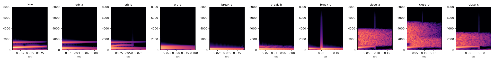

v0.8.0 보상 소리 후보
방울 먹기 "톡", 콤보 끊김 "툭", 아슬아슬 "슉". 종류마다 하나씩 골라 알려 주세요. 게임에는 일단 셋 다 A가 들어가 있습니다.
방울은 한 줄 안에서 연속으로 먹으면 마단조 5음(E·G·A·B·D)을 따라 한 음씩 올라가고, 다음 줄에서 처음 음으로 돌아갑니다. 빠른 구간(압박 단계 6 이상)에서는 3dB 더 작게 납니다.
지금 고른 소리:
방울 "톡" (lane보다 6dB 작게)
A 맑은 톡lane_c 몸통을 E4에, 유리빛 조금
B 방울 톡몸통 + 한 옥타브 위 작은 물방울
C 부드러운 톡유리빛 없이 몸통 + 옥타브 배음
콤보 끊김 "툭" (lane보다 10dB 작게)
A 내려가는 툭E3 → C#3
B 막힌 툭낮은 몸통 + 아주 작은 낮은 노이즈
C 두 번 툭B3 → E3 짧게 두 번
아슬아슬 "슉" (lane보다 4dB 작게)
A 스치는 슉1~3kHz 바람 + 작은 lane_c 몸통
B 지나가는 슉바람이 높은 쪽에서 낮은 쪽으로
C 짧은 숨 슉더 짧고 몸통이 앞에
같이 듣기
게임의 곡에 맞춰 마디마다: 방울 6개(반 박 간격, 5음으로 오름) → 아슬아슬 → 두 마디에 한 번 콤보 끊김. 각 종류에서 고른 소리(높이·밝기 포함)를 씁니다. 160BPM은 빠른 구간이라 방울이 3dB 작습니다.
측정
숫자 표는 report.md에 있습니다.
